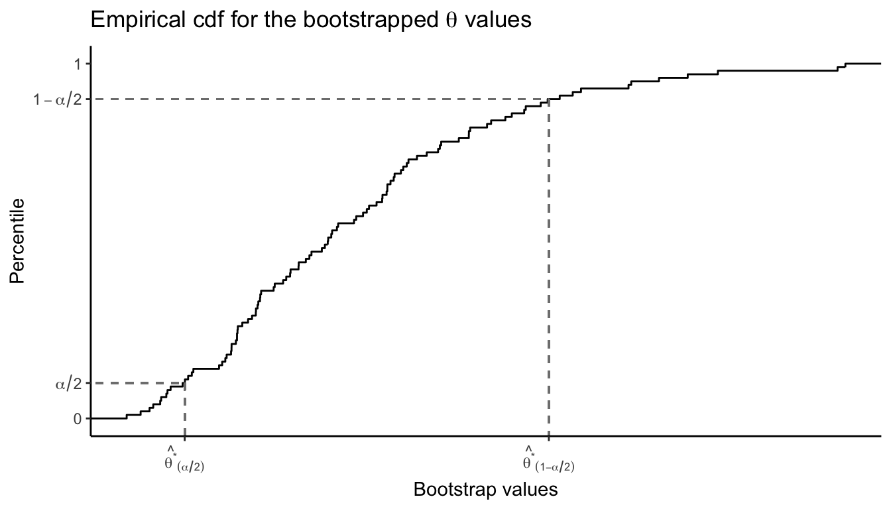
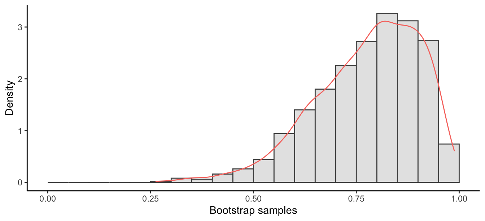

6.7 Bootstrap confidence intervals
Now that we’ve seen how to compute the bootstrap standard error, we can build confidence intervals using it There are three kinds of bootstrap cis:
- Normal bootstrap interval
- Pivotal bootstrap interval
- Percentile bootstrap interval
Let \(X_1,\dots,X_n\,\overset{\text{iid}}{\sim}\,f(x|\theta)\) whose distribution is unknown, and we are interested in constructing a ci for the parameter \(\theta\). For each of the cis, we need to obtain bootstrap samples \(\{\hat\theta^*_1,\dots,\hat\theta^*_B\}\) of the estimator \(\hat\theta=\theta(X_1,\dots,X_n)\) using the procedure in Definition ??.
6.7.1 Normal bootstrap interval
From the bootstrap samples obtain \[ \text{se}_{boot}(\hat\theta) = \sqrt{\frac{1}{B} \sum_{i=1}^B \left(\hat\theta^*_i - \frac{1}{B}\sum_{i=1}^B \hat\theta^*_i \right)^2}. \]
Definition 6.7 (Normal bootstrap interval) Suppose the estimator \(\hat\theta\) for \(\theta\) is asymptotically normal. The interval \[ \left[\hat\theta - z(\alpha/2)\cdot \text{se}_{boot}(\hat\theta) \ , \ \hat\theta + z(\alpha/2)\cdot \text{se}_{boot}(\hat\theta) \right], \] is an approximate 100\((1-\alpha)\)% confidence interval for \(\theta\).
The idea is to replace \(\text{se}(\hat\theta_n)\) in the Wald interval with the bootstrap se. Note that this interval is not very accurate unless the distribution of \(\hat\theta\) is close to normal.
6.7.2 Bootstrap percentile interval
Arrange the bootstrapped quantities \(\hat\theta_i^*\) in ascending order to obtain the ordered quantities \[ \hat\theta_{(1)}^*, \hat\theta_{(2)}^*, \dots, \hat\theta_{(B)}^*. \]
Let \(\hat\theta^*_{(\alpha)}\) be the \(\lfloor B\alpha \rfloor\)-th smallest value among the \(\hat\theta_i^*\). In other words, 100\(\alpha\)% of the ordered \(\hat\theta_{(i)}^*\) are smaller than \(\hat\theta^*_{(\alpha)}\).
Definition 6.8 (Bootstrap percentile interval) An approximate 100\((1-\alpha)\)% confidence interval based on the bootstrap percentiles is given by \[ \left[\hat\theta^*_{(\alpha/2)} \ , \ \hat\theta^*_{(1-\alpha/2)}\right] \]
The logic here is that the bootstrap method suggests that the true parameter value for \(\hat F_n(x)\) will lie in this interval about 100\((1-\alpha)\)% of the time. Hopefully, the ci for \(\theta\) based on \(\hat F_n(x)\) will converge to the ci for \(\theta\) based on \(F(x)\).

6.7.3 Bootstrap pivotal interval
Define the pivotal quantity \(Q=\hat\theta - \theta\), and denote the cdf of \(Q\) by \(G(r) = \Pr(\hat\theta - \theta \leq r)\). Define further the top \(\alpha\) point of the distribution of this pivot by \(r(\alpha)\) s.t. \(G\big(r(\alpha)\big)=1-\alpha\). The fact that \[\begin{align*} 1-\alpha &= \Pr\left(r(1-\alpha/2) \leq \hat\theta - \theta \leq r(\alpha/2) \right) \\ &= \Pr\left(\hat\theta - r(\alpha/2) \leq \theta \leq \hat\theta - r(1-\alpha/2) \right), \end{align*}\] this gives an exact 100\((1-\alpha)\)% confidence interval for \(\theta\) of the form \[ \left[ \hat\theta - r(\alpha/2), \hat\theta - r(1-\alpha/2) \right]. \] Of course, this is a valid interval if the pivot \(Q\) is free of \(\theta\), which unfortunately it is not (since its distribution \(G\) depends on \(\theta\)). However, in the bootstrap approach we need not care about this!
The argument is that the behaviour of \(Q=\hat\theta - \theta\) is not far off from \(\hat Q = \hat\theta^* - \hat\theta\), in which case we make use of the estimate of \(G(r)\) given by \[ \hat G(r) = \frac{1}{B} \sum_{k=1}^B \mathop{\mathrm{\unicode{x1D7D9}}}[\hat\theta^*_k - \hat\theta \leq r], \] the empirical distribution using the bootstrap samples \(\hat\theta^*_k\). We replace \(r(\alpha/2)\) and \(r(1-\alpha/2)\) by their bootstrap counterparts \(r^*(\alpha/2)\) and \(r^*(1-\alpha/2)\) s.t. \(\hat G\big(r^*(\alpha)\big)=1-\alpha\). Then, \[\begin{align*} 1-\alpha &= \Pr\left(r^*(1-\alpha/2) \leq \hat\theta^* - \hat\theta \leq r^*(\alpha/2) \right) \\ &\approx \Pr\left(r^*(1-\alpha/2) \leq \hat\theta - \theta \leq r^*(\alpha/2) \right) \\ &= \Pr\left(\hat\theta - r^*(\alpha/2) \leq \theta \leq \hat\theta - r^*(1-\alpha/2) \right), \end{align*}\] so we can build a ci based off of this fact.
In practice however, it’s easier to use the bootstrap percentiles, since \[ r^*(\alpha) = \hat\theta^*_{(1-\alpha)} - \hat\theta \] by definition. It follows that \[ \Pr\left(\hat\theta - r^*(\alpha/2) \leq \theta \leq \hat\theta - r^*(1-\alpha/2) \right) = \Pr\left(2\hat\theta - \hat\theta^*_{(1-\alpha/2)} \leq \theta \leq 2\hat\theta - \hat\theta^*_{(\alpha/2)} \right) \approx 1-\alpha. \]
Definition 6.9 (Bootstrap pivotal interval) An approximate 100\((1-\alpha)\)% confidence interval based on the bootstrap pivotal quantity is \[ \left[ 2\hat\theta - \hat\theta^*_{(1-\alpha/2)} \ , \ 2\hat\theta - \hat\theta^*_{(\alpha/2)} \right], \] where \(\hat\theta^*_{(\alpha)}\) denotes the 100\(\alpha\)-th perncetile of the ordered bootstrap estimates \(\hat\theta_i^*\)s.
6.7.4 Which one to use?
In general, all three methods give similar performance, provided that
the (empirical) distribution of \(\hat\theta\) is roughly “nice”, i.e. unimodal, symmetric, not skewed, unbiased.
the empirical distribution \(F_n(x)\) of the data represents the population distribution \(F(x)\) well. If it doesn’t, then no bootstrapping method will be reliable35.
In all cases, these confidence intervals are , i.e. the coverage probability \(\Pr(\theta \in C({\boldsymbol X}))\) is not exactly \(1-\alpha\). More accurate methods exist but are not discussed here.
Example 6.12 This example was used by Bradley Efron, the inventor of the bootstrap. The data are LSAT scores (for entrance to law school) and GPA.
| \(i\) | LSAT | GPA |
|---|---|---|
| 1 | 576 | 3.39 |
| 2 | 635 | 3.30 |
| 3 | 558 | 2.81 |
| 4 | 578 | 3.03 |
| 5 | 666 | 3.44 |
| 6 | 580 | 3.07 |
| 7 | 555 | 3.00 |
| 8 | 661 | 3.43 |
| 9 | 651 | 3.36 |
| 10 | 605 | 3.13 |
| 11 | 653 | 3.12 |
| 12 | 575 | 2.74 |
| 13 | 545 | 2.76 |
| 14 | 572 | 2.88 |
| 15 | 594 | 2.96 |
Each data point is of the form \(X_i=(Y_i, Z_i)\), where \(Y_i = \text{LSAT}_i\) and \(Z_i = \text{GPA}_i\).
The law school is interested in the correlation coefficient \[ \rho = \frac{\iint (y-\mu_y)(z-\mu_z)\mathop{\mathrm{d}}\hspace{0.5pt}\!F(y,z)}{\sqrt{\int(y-\mu_y)^2\mathop{\mathrm{d}}\hspace{0.5pt}\!F(y) \int (z-\mu_z)^2\mathop{\mathrm{d}}\hspace{0.5pt}\!F(z)}}. \] The plug-in estimate is the sample correlation \[ \hat\rho = \frac{\sum_{i=1}^n (Y_i-\bar Y)(Z_i-\bar Z)}{\sqrt {\sum_{i=1}^n (Y - \bar Y)^2\sum_{i=1}^n (Z_i-\bar Z)^2}}. \] The estimated correlation is \(\hat\rho=0.776\). Note that \(\hat\rho\in[0,1]\) and it is not entirely obvious what its distribution might be. Several choices do exist for distributions within the unit interval of course, for instance \(\mathop{\mathrm{Unif}}(0,1)\) or the Beta distribution–but are these good distributions to impose on our statistic? Let’s use bootstrap to estimate the 95% ci for \(\rho\).
(rho <- cor(y, z)) # 'law' data frame in R package 'bootstrap'## [1] 0.7763745B <- 1000
rhostar <- rep(NA, B)
for (i in 1:B) {
samp <- sample(1:15, size = 15, replace = TRUE)
rhostar[i] <- cor(y[samp], z[samp])
}
round(head(rhostar), 3)## [1] 0.684 0.898 0.955 0.675 0.910 0.864(bootse <- sd(rhostar)) # bootstrap se## [1] 0.1269466Now, compute the three kinds of intervals.
# normal interval
c(rho - qnorm(0.975) * bootse, min(rho + qnorm(0.975) * bootse, 1))## [1] 0.5275637 1.0000000# percentile interval
a <- as.numeric(quantile(rhostar, probs = 0.025))
b <- as.numeric(quantile(rhostar, probs = 0.975))
c(a, b)## [1] 0.4904234 0.9568777# pivotal interval
c(2 * rho - b, min(2 * rho - a, 1))## [1] 0.5958713 1.0000000The three methods are not too far off each other, but with a larger sample size they may show closer agreement. The plot below shows the distribution of \(\hat\rho^*\) (a bit skewed).
